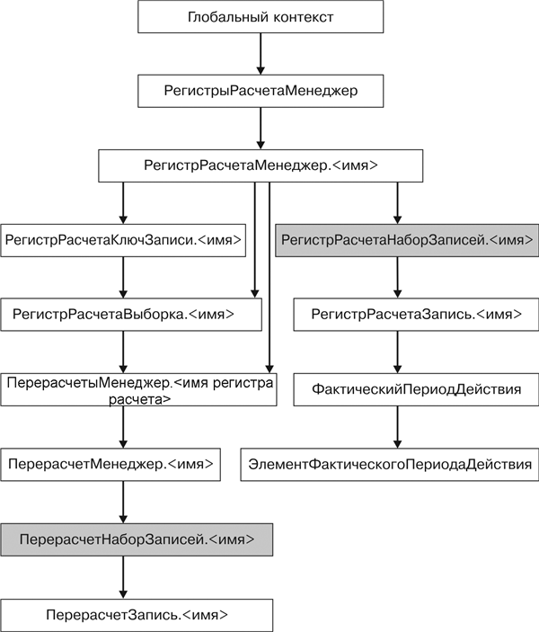

1.2.13.1. Объекты встроенного языка для работы с регистрами расчетовНа следующей схеме изображено взаимодействие объектов встроенного языка для работы с регистрами расчета (рис. 29.23).

Рис. 29.23. Объекты встроенного языка для работы с регистрами расчетов
ПРИМЕЧАНИЕ
Заливкой выделен объект манипулирования данными.
Узнай больше!
Про основные виды объектов встроенного языка можно прочитать в главе «Объекты встроенного языка для работы с прикладными данными».
РегистрРасчетаЗапись.<имя>. Используется для доступа к записи регистра расчета. Объект не создается непосредственно, а предоставляется другими объектами, отвечающими за регистр расчета. Например, данный объект представляет записи регистра в наборе записей.
РегистрРасчетаКлючЗаписи.<имя>. Представляет собой набор значений, однозначно идентифицирующих запись регистра. Объект используется в тех случаях, когда необходимо сослаться на определенную запись. Например, он выступает в качестве значения свойства ТекущаяСтрока табличного поля, отображающего список записей регистра.
ПерерасчетыМенеджер.<имя регистра расчета>. Менеджер всех менеджеров перерасчетов регистра расчетов.
ПерерасчетМенеджер.<имя перерасчета>. Менеджер перерасчета служит для получения набора записей перерасчета.
ПерерасчетНаборЗаписей.<имя перерасчета>. Набор записей перерасчета.
ПерерасчетЗапись.<имя перерасчета>. Объект используется для доступа к записи перерасчета.
ФактическийПериодДействия. Массив значений типа ЭлементФактическогоПериодаДействия.
ЭлементФактическогоПериодаДействия. Элемент фактического периода действия.
Свойства и методы взаимодействия перечисленных объектов в большинстве своем аналогичны у объектов, предназначенных для работы с регистрами накопления (см. раздел «Объекты встроенного языка для работы с регистрами накопления»).
|